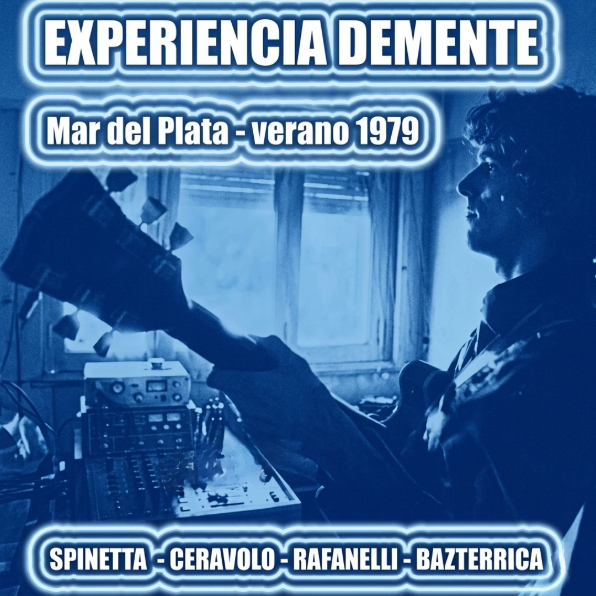

Verano, 1979 - Mar Del Plata, Argentina

El registro conocido como “Spinetta – Experiencia” pertenece a una etapa poco documentada pero fundamental en la transición artística de Luis Alberto, ubicada entre fines de los años 70 y comienzos de los 80. Este material remite directamente al proyecto Experiencia Demente, una formación efímera que anticipó muchos de los cambios estéticos que luego se consolidarían en su obra posterior.
Luego de la disolución de Invisible, Spinetta inició un período de exploración marcado por la fusión entre el rock y el jazz. En este laboratorio creativo comenzaron a gestarse composiciones que aún no habían sido editadas oficialmente, como “Kamikaze”, “Viento celeste” o “El sueño de Chita”, piezas que reaparecerían más tarde en discos como Kamikaze (1982) y en el desarrollo del sonido de Spinetta Jade.
Desde el punto de vista histórico, estos registros capturan el pasaje desde el rock progresivo de los 70 hacia una nueva etapa más híbrida e introspectiva. Al tratarse de material no oficial, las grabaciones poseen un carácter fragmentario y una calidad sonora variable, pero funcionan como un documento de archivo invaluable para reconstruir la evolución del artista antes de su viaje a Estados Unidos para grabar Only Love Can Sustain.
Material difundido con fines culturales y de preservación histórica.